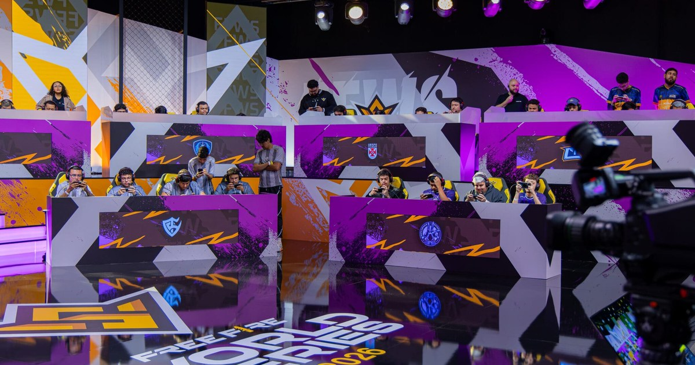

RRQ Kazu top the FFWS Last Chance — and LOS miss the Grand Final by one point
The last four seats at the Free Fire World Series Grand Final were settled in Bangkok on Friday — and the cruellest cut of the tournament landed on Brazil. LOS won matches, piled up eliminations, and still went home one point short, while RRQ Kazu, Blue Cheese, Resurrection Esports and Bigetron by Vitality completed the twelve-team field for Saturday's final.

Disclosure: this post contains affiliate links. I earn a commission on qualifying purchases.
The Free Fire World Series Global Finals 2026 came down to a single point on Friday. Twelve teams played ten matches in the Last Chance stage at BITEC LIVE in Bangkok, chasing the last four places in Saturday's Grand Final. Garena's official standings after the tenth match confirmed the four who made it — and the famous name that did not.
Indonesia's RRQ Kazu topped the lobby on 161 points, built on three Booyahs — the most of any team in the stage — and 76 placement points. It is a return with a score to settle: RRQ finished second at the 2024 world final in Rio de Janeiro, and they arrive in this final as the form team of the last-chance field.
The four who got in
Blue Cheese took second place on 155 points, with one Booyah and 86 eliminations. Third went to India's Resurrection Esports on 149 — the loudest stat line of the day, because their 104 eliminations were the most any team managed in the lobby. Sportsdunia notes Resurrection are the first Indian squad to reach an FFWS Grand Finals field.
The final seat went to Bigetron by Vitality on 139 points. The reigning FFWS Southeast Asia champions did it the hard way: they took fourth without winning a single match all day, surviving on placement and elimination consistency while teams around them swung between Booyahs and early exits.
One point short
The story of the stage is the team in fifth. Brazil's LOS finished on 138 points — a single point behind Bigetron — and are out of the world championship.
LOS were not a long shot who got lucky to be close. They finished second in Knockout Phase 1, won two Booyahs in the Last Chance — a total bettered only by RRQ — and posted 84 eliminations. What cost them was placement: 54 placement points, well below the teams above them. Two match wins and a mountain of kills were not enough to buy the one extra point that would have put a third Brazilian team in the final.
ONIC Olympus, the third Indonesian team in the lobby, finished sixth on 130, and the rest of the twelve — Team Infinity, GOW, xProjekt, Team Apex Gaming, Horaa Esports and Stellar Esport — are also done for the year.
The final twelve
The four qualifiers join the eight teams that came straight through the Knockout Stage: All Gamers Global and Buriram United Esports for Thailand, Fluxo W7M and LOUD for Brazil, GunDynasty and LYON from Latin America, and P Esports and Team Flash from Vietnam. The tournament that began on November 6 with 24 teams is down to its last twelve.
The Grand Final runs Saturday, November 28 at BITEC LIVE, starting at 10:00 UTC, and streams on the official Free Fire Esports YouTube channel. It uses the Champion Rush format: teams race to a 110-point threshold, and the first team past it that then wins a match — a Booyah — takes the world title. There is no fixed match limit, and the championship carries a $1,200,000 prize pool, with $350,000 to the winners.
Brazil still gets its shot at a fourth world title through Fluxo W7M — the 2024 champions — and LOUD. But after Friday, the final will be played knowing the team that missed it by the smallest possible margin is already on the flight home.
Sources: FFWS 2026 Last Chance Results: Four Teams Reach Grand Final (TalkEsport) · FFWS Global Finals 2026: Teams, Schedule, India and Results (TalkEsport) · FFWS Global Finals 2026 Grand Finals: Teams, Schedule and How to Watch (Sportsdunia) · FFWS Global Final 2026 Last Chance Points Table (Online Maharashtra)
Watch
Source: Free Fire India Esports — the official broadcast of the FFWS Global Finals 2026 Last Chance stage in Bangkok.
Gear up: Razer — mice, keyboards, headsets and laptops.